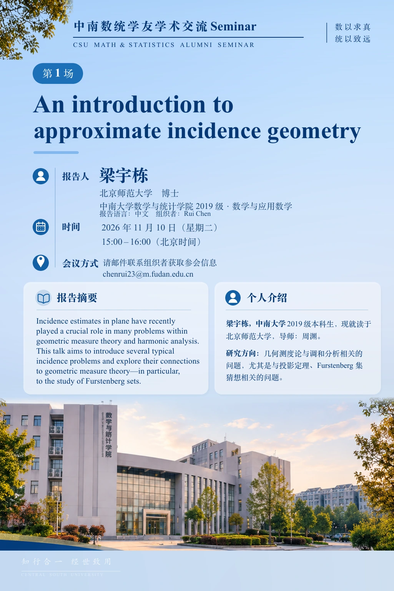

Session 1
An introduction to approximate incidence geometry
- Speaker
- Yudong Liang (梁宇栋)
Beijing Normal University - Time
Beijing time (UTC+8)- Language
- Chinese
- Format
- Online · Tencent Meeting
Email the organizer for joining details.
chenrui23@m.fudan.edu.cnAbstract
Incidence estimates in plane have recently played a crucial role in many problems within geometric measure theory and harmonic analysis. This talk aims to introduce several typical incidence problems and explore their connections to geometric measure theory—in particular, to the study of Furstenberg sets.
About the speaker
Yudong Liang entered Central South University in 2019 as an undergraduate in mathematics and applied mathematics. He is now studying at Beijing Normal University under the supervision of Yuan Zhou. His research concerns geometric measure theory and harmonic analysis, especially projection theorems and questions related to the Furstenberg set conjecture.

View / download poster (PDF)